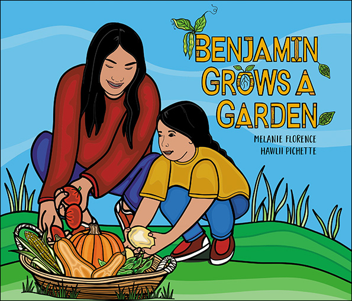
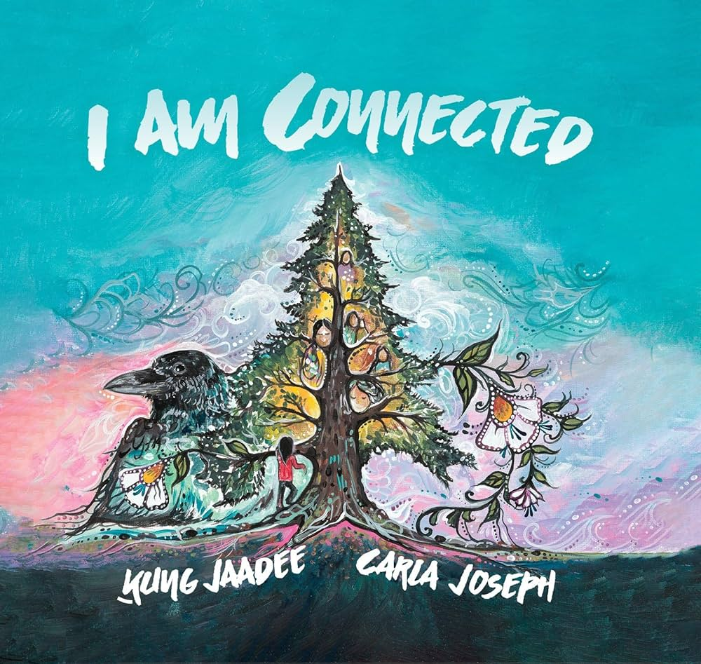
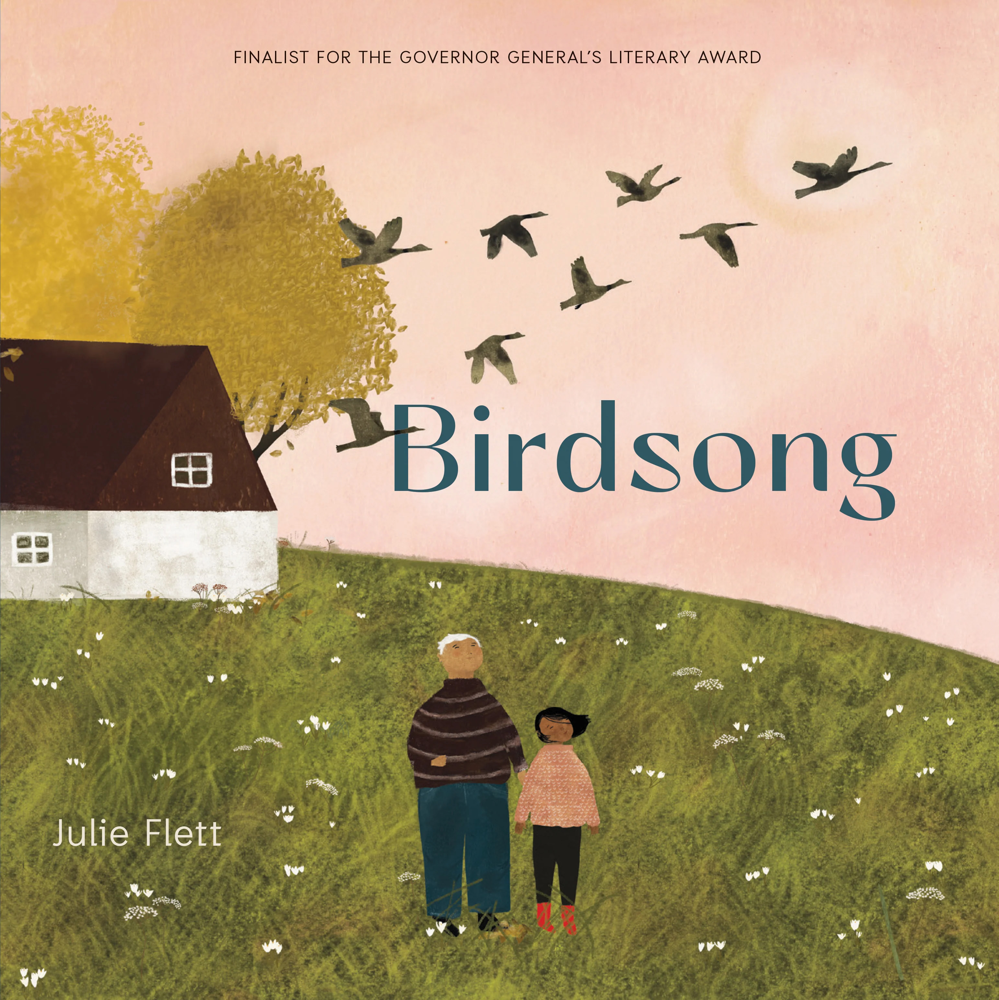

Classroom & Early Childhood Applications
Storytelling can be thoughtfully woven into everyday classroom and early childhood practice through books, materials, music, discussion, and experiences connected to the land. In these settings, storytelling is not treated as a simple teaching tool, but as a relational and meaningful way of learning with children, grounded in Indigenous pedagogies that emphasize connection, reflection, and responsibility (Archibald, 2008; see References).
These applications reflect storytelling as a relational and reflective process, where listening, respect, and connection to land and community are central to learning (Archibald, 2008).
These applications emphasize listening, reflection, creativity, and connection. Children are invited to engage with stories in different ways and to make meaningful links between stories, their experiences, their communities, and the natural world.
Storytelling Through Books
Picture books can open space for conversations about identity, nature, relationships, and belonging. Books such as Benjamin Grows a Garden, I Am Connected, and Birdsong invite children to think about caring for the land, noticing connections, and reflecting on their own experiences.
These stories can be shared through read-alouds, small-group conversations, or quieter reflective moments. Rather than focusing on one correct interpretation, educators can encourage children to wonder, respond, and make personal connections, supporting meaning-making and relational learning (Gerlach, 2018; see References).
Educators play an important role by guiding discussions, asking open-ended questions, and supporting children in making connections between stories and their own lives.

Melanie Florence (Author), Hawlii Pichette (Illustrator)

Ḵung Jaadee (Author), Carla Joseph (Illustrator)

Julie Flett (Author & Illustrator)